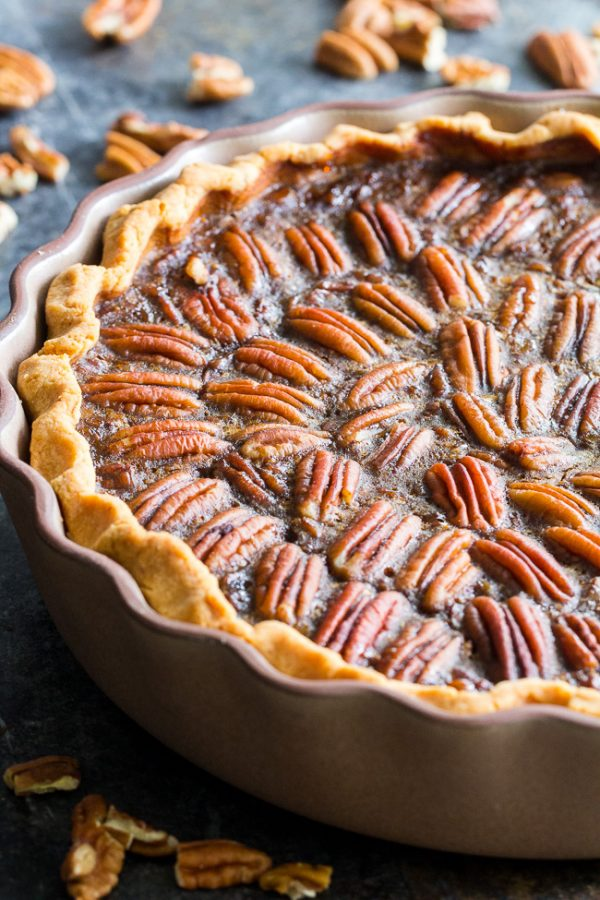
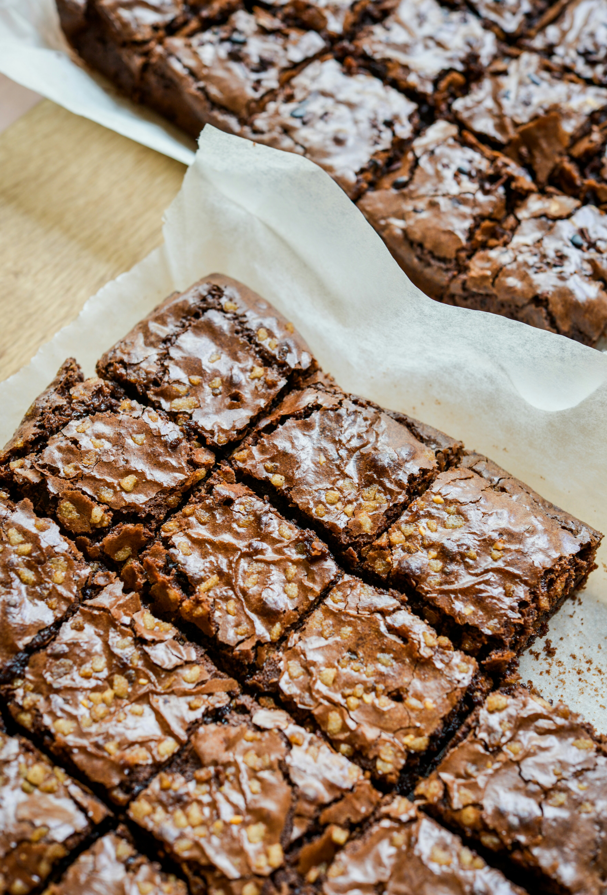
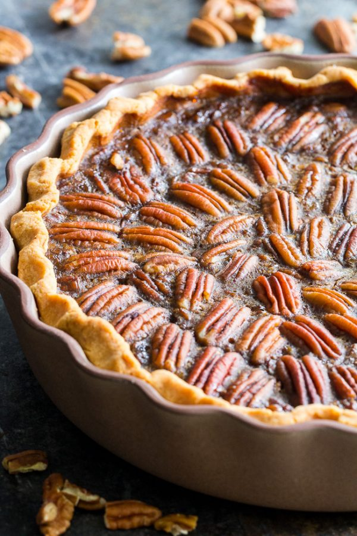
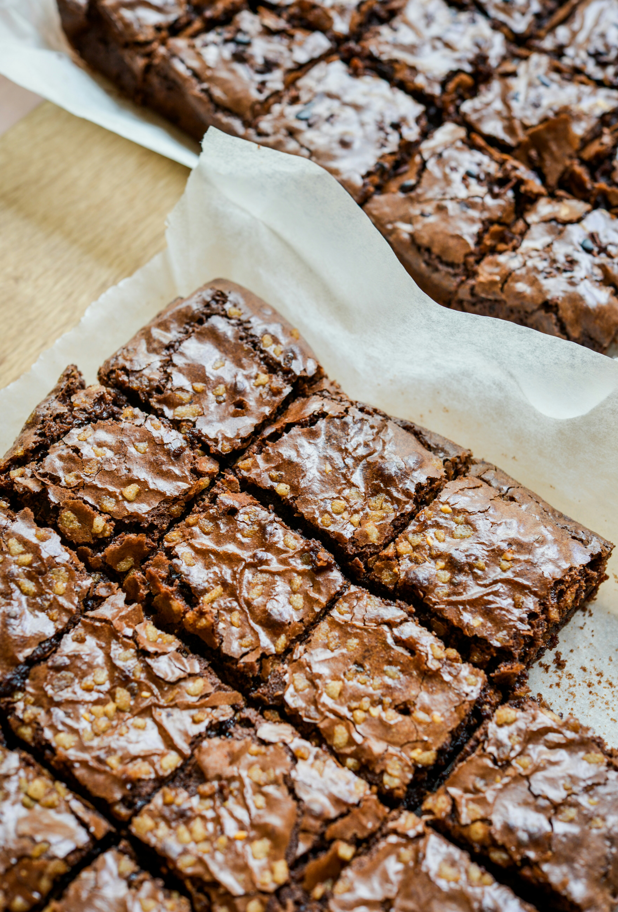

|  |  |
 |
|  | |
 |
| Recipes | Pecan Pie | Chocolate Chip Cookies | Brownies |
| Difficulty | 3/5 | 3/5 | 4/5 |
| Ingredients | 1 3/4 cups white sugar 1/4 cup dark corn syrup 1/4 cup butter1 tablespoon cold water 2 teaspoons cornstarch 3 eggs 1/4 teaspoon salt 1 teaspoon vanilla extract1 1/4 cups chopped pecans1 (9 inch) unbaked pie shell |
1 cup butter, softened 1 cup white sugar 1 cup packed brown sugar 2 eggs 2 teaspoons vanilla extract 1 teaspoon baking soda 2 teaspoons hot water 1/2 teaspoon salt 3 cups all-purpose flour 2 cups semisweet chocolate chips 1 cup chopped walnuts |
1 cup 8oz/240g unsalted butter, melted and cooled 2 tablespoons (30ml) vegetable oil 1 1/4 cups (9oz/260g) white sugar 1 cup (7oz/200g) packed light brown sugar 4 (2oz/57g each) large eggs, at room temperature 1 tablespoon (15ml) pure vanilla extract 3/4 teaspoon salt 1 cup (3.5oz/130g) all purpose flour 1 cup (3.5oz/100g) good quality, unsweetened cocoa powder 7 oz (200g) roughly chopped chocolate or large chocolate chips |
| Directions | - Preheat oven to 350 degrees F (175 degrees C). - In a medium saucepan, combine the sugar, corn syrup, butter, water, and cornstarch. Bring to a full boil, and remove from heat. - In a large bowl, beat eggs until frothy. Gradually beat in cooked syrup mixture. Stir in salt, vanilla, and pecans. Pour into pie shell. - Bake in preheated oven for 45 to 50 minutes, or until filling is set. |
- Preheat oven to 350 degrees F (175 degrees C). - Cream together the butter, white sugar, and brown sugar until smooth. Beat in the eggs one at a time, then stir in the vanilla. Dissolve baking soda in hot water. Add to batter along with salt. Stir in flour, chocolate chips, and nuts. Drop by large spoonfuls onto ungreased pans. - Bake for about 10 minutes in the preheated oven, or until edges are nicely browned. |
- Preheat oven to 175 degrees C | 350 degrees F. - Lightly grease an 8x12-inch baking pan* with cooking oil spray. Line with parchment paper (or baking paper); set aside. - Combine melted butter, oil and sugars together in a medium-sized bowl. Whisk well to combine. Add the eggs and vanilla; beat until lighter in colour (another minute). - Sift in flour, cocoa powder and salt. Gently fold the dry ingredients into the wet ingredients until JUST combined (do NOT over beat as doing so well affect the texture of your brownies). - Fold in 3/4 of the chocolate pieces. - Pour batter into prepared pan, smoothing the top out evenly, and top with remaining chocolate pieces. -Bake for 25-30 minutes for just under-done brownies (fudgier texture) or until the centre of the brownies no longer jiggles and is JUST set to the touch. OR 35-40 minutes if you like your brownies well set and firm. - After 15-20 minutes, carefully remove them out of the pan and allow to cool to room temperature before slicing into 16 brownies. They set while they cool. |